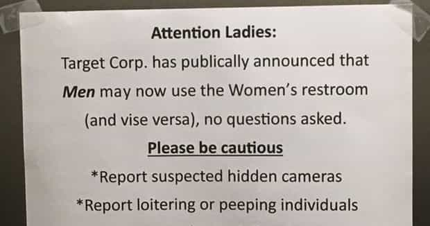

is an aspiring philosopher king, living the dream, travelling the world, hoarding FRNs and ignoring Americunts. He is a European at heart, lover of Latinas, and currently residing in the USA.


While we certainly have our work cut out for us, I feel that we do not take enough time to acknowledge our victories and bathe in the tears of our enemies. It is in this spirit that I ask you all to raise a glass in a universal toast to some of the largest victories undertaken by the Patriarchy this year. Here’s to many more.

One disturbing problem that has been on the rise lately is the terrifying prospect of having to wait in a line in order to use a public restroom. In my youth, this was a problem completely isolated to females, but in the past year I can count three distinct instances where there was a line to use the male restroom. The brilliant minds of the patriarchy came up with an innovative solution: Operation Full Stream Ahead. Open ALL restrooms up to men. We are busy, important, and need to piss, and there’s no reason we should only have access to 50% of the restrooms. After all, we built 100% of them.
The solution, I must say, was quite creative. By picking an obscure and relatively unknown minority of mentally ill individuals known as “transgenders” we created the illusion that this group is of significant size that they should be part of public policy debates, and have special laws crafted around them. I admit, I thought it was an absurd plan destined for failure, but the evidence has shown otherwise. Restrooms around the nation are now open for us to urinate in regardless of signage posted at the door.
But when the patriarchy plans for change, we always double down. There is always a secondary, and sometimes tertiary goal in any of our actions. The female restroom was one of their remaining “safe spaces” they could retreat to during a date, gossip with friends, or just discreetly practice their anorexia. Well, all that is over now that men are able to maintain an active presence in female restrooms throughout America.
The tertiary goal of gaming women in restrooms is a path that will be forged by the next generation of brave men, and I look forward to their contributions.
Our operation to infiltrate Hollywood and major advertising studios took several years of covert work, but has finally paid off. Last month, we were able to display the above billboard promoting the new X-Men film, which is only a cover for the real message—communicating to men everywhere that violence against women, particularly choking them with one arm while demonstrating your biological superior body strength—is sometimes necessary to maintain your dominance.
Operation Dark Triad had a two-fold attack: On the one hand, men everywhere were reminded of their physical power, ensuring the Patriarchy remains in power, while at the same time triggering special snowflakes. It was a real win-win. Some would say it’s a minor victory, and that the above tweet is correct—we still have a long way before we could portray a human man choking a human woman on a billboard, and that in fact this ad was only created because it tells a fictional battle of a mutant with superhuman powers fighting another mutant with different and unique powers in an action film, but don’t listen to those naysayers.
Operation Cool Breeze was a brief success. For the first full month of summer, we were able to propagandize the minds of millions of pool-going individuals throughout America with some reminders for summer gaming. For example, in the image above, clockwise from the girl on the diving board:
It’s cool to keep a fit, toned body that you show off at the pool.
It’s not cool for two dudes to chase each other while there are single attractive ladies around to game.
It’s not cool to game when you are not appropriately dressed for the venue. Always be ready to swim and get wet.
It’s cool to teach younger men the value of game.
It’s not cool to be awkward and socially aloof.
And finally, it’s not cool to chase after fatty gingers swimming in their t-shirts instead of appropriate swimwear.
Social Justice Warriors found some supposed racist message in our posters, something about how it portrayed white supremacy, even though two of the “not cool” labels were of white males, somehow the above was racist. This was an oversight on the patriarchy’s part, and we will make sure to make any secret propaganda materials more politically correct in the future so that their true purpose is not thwarted. Still, even the commenters of the HuffPo find calling this poster “racist” to be stretching.
This is a clear reminder of how we must always consider the most triggered and mentally weak among us, and remember to fool them by always portraying the white male as a dumbass and the overweight aging single female as the natural leader. If we had not been so sloppy in the message above, our posters would still be sitting on display at YMCAs throughout the nation.

This operation was a mere test of the power of our social media brain distraction devices that have now infiltrated the vast majority of the population. And it was a wild success. Patriarchal members of the 4chan community (I know, I know, but trust me, we are there too) created a false call to action, telling women that by urinating in their clothing they were somehow supporting equality of the sexes. Many feminists obliged, and hilarious photos and damp smelly crotches ensued.
This operation proved the ease with which we can control facile minds through smartphone monitoring and indoctrination devices. Humans have a natural instinctual resistance to urinating or defecating near food, shelter, or clothing, and we were able to override these natural instincts with a few keystrokes and a properly planned hashtag. #Pissforequality was a stunning success.

I’m pleased to announce that I have been given clearance to finally reveal the secret mission behind the mass outrage of early 2016. The patriarchy concocted a colossal plan of distraction and disinformation, which culminated in authorities diverting enormous resources from targeted areas so that massive quantities of pharmaceutical grade Kratom could be slipped in through normally patrolled areas that were left wide open.
While this was a worldwide coordinated operation, targeted at the largest 50 distribution hubs worldwide, the biggest successes were in Australia, which had yet to develop wholesale distribution lines. A massive distraction along the northwest coast of Australia diverted coast guard, navy, and municipal police forces to monitor this area, searching in vain for nonexistent speedboats full of roving rapists, leaving the southern border open to gargantuan shipments of the potent herb which are now being stored in underground undisclosed locations, ready for distribution in the near future for an undisclosed future operation.
What’s next, Max? Can I reveal plans that Laci Green is actually a double agent sent to destroy feminism from the inside out with sheer stupidity? Was gay marriage a clandestine attempt for men to grab state benefits without committing to women, while continuing to pursue our sexual relationships with females unabashed? Are our scientists and philosophers currently thinking up the newest insanities that will become 6th Wave Feminism, finally destroying it for good?
Alas, I am not at liberty to disclose at this time, but be assured, gentlemen, we are in for a wild and fun ride indeed.
 If you like this article and are concerned about the future of the Western world, check out Roosh's book Free Speech Isn't Free. It gives an inside look to how the globalist establishment is attempting to marginalize masculine men with a leftist agenda that promotes censorship, feminism, and sterility. It also shares key knowledge and tools that you can use to defend yourself against social justice attacks. Click here to learn more about the book. Your support will help maintain our operation.
If you like this article and are concerned about the future of the Western world, check out Roosh's book Free Speech Isn't Free. It gives an inside look to how the globalist establishment is attempting to marginalize masculine men with a leftist agenda that promotes censorship, feminism, and sterility. It also shares key knowledge and tools that you can use to defend yourself against social justice attacks. Click here to learn more about the book. Your support will help maintain our operation.
Read More: Top 6 Acts Of Censorship In 2016